전자산업기사 (2004-03-07 기출문제)
1과목: 전자회로
1. 그림과 같은 회로의 설명으로 옳은 것은?
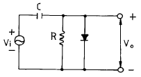
- 클리핑 회로이다.
- 클램프 회로이다.
- 진폭 제한 회로이다.
- 양단 클리핑 회로이다.
(정답률: 82%)

2. 트랜지스터 회로의 바이어스를 거는 방법은?
- 베이스-이미터 사이는 역방향, 컬렉터-베이스 사이도 역방향
- 베이스-이미터 사이는 역방향, 컬렉터-베이스 사이는 순방향
- 베이스-이미터 사이는 순방향, 컬렉터-베이스 사이도 순방향
- 베이스-이미터 사이는 순방향, 컬렉터-베이스 사이는 역방향
(정답률: 83%)
3. 반송파 전력이 20[kW] 일 때 변조율 70[%]로 진폭 변조 하였다. 상측파대 전력은?
- 20[kW]
- 10[kW]
- 4.9[kW]
- 2.45[kW]
(정답률: 67%)
4. 공통 컬렉터 증폭기(CC)의 특성 중 옳지 않은 것은?
- 이미터 폴로어(Emitter Follower)라고도 부른다.
- 전압 이득이 매우 크다.
- 버퍼로 많이 사용된다.
- 입력 저항이 크다.
(정답률: 54%)
5. 다음의 연산증폭기를 사용한 회로에서 출력 Vo의 식은?
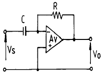

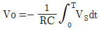
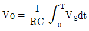

(정답률: 88%)
6. 이상적인 연산 증폭기의 특성이 옳은 것은? (단, Ri는 증폭기의 입력 저항, Ro는 출력 저항을 의미한다.)
- Ri= ∞ , Ro= 0
- Ri= 0, Ro= ∞
- Ri= ∞ , Ro= ∞
- Ri= 0, Ro= 0
(정답률: 74%)
7. 궤환 발진기의 발진 조건에 대한 설명 중 옳지 않은 것은? (단, A는 증폭도, β 는 궤환량이다. )
- 정궤환을 이용한다.
- A의 위상 변화는 180° 이다.
- β 의 위상 변화는 180° 이다.
- 궤환 이득 Aβ = 1 이며, 위상 변화는 180° 이다.
(정답률: 78%)
8. 고주파 특성이 좋고 입력 임피던스가 작으며, 출력 임피던스가 큰 회로 방식은?
- cathode follower
- 컬렉터 접지
- 이미터 접지
- 베이스 접지
(정답률: 72%)
9. 반파 정류회로와 전파 정류회로의 전압 변동율을 각 각 A, B라 할 때 이의 관계는? (단, 부하의 조건은 같다.)
- A=B
- A＞B
- A＜B
- A와 B는 서로 무관하다.
(정답률: 87%)
10. 부궤환 증폭기(negative feedback amplifier)의 장점이 아닌 것은?
- 전력 효율이 개선된다.
- 주파수 특성이 개선된다.
- 일그러짐(distortion)이 감소한다.
- 부하 변동에 의한 이득 변동의 감소로 증폭의 동작이 안정된다.
(정답률: 34%)
11. 듀티 사이클(duty cycle)이 0.1이고, 주기가 40 ㎲인 펄스의 폭은?
- 10 ㎲
- 0.2 ㎲
- 2 ㎲
- 4 ㎲
(정답률: 80%)
12. 다음 그림과 같은 다이오드 논리회로(logical circuit)는 어느 논리회로에 해당하는가? (단, 전압이 걸릴 때 "1", 걸리지 않을 때를 "0"으로 한다.)
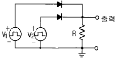
- AND 회로
- OR 회로
- NOT 회로
- NOR 회로
(정답률: 68%)
13. 다음 논리 게이트 중에서 출력 분기수(fan out)가 가장 큰 것은?
- DTL
- TTL
- RTL
- CMOS
(정답률: 54%)
14. J-K 플립-플롭에서 Jn=0, Kn=1일 때 클럭 펄스가 1이면 Qn+1의 출력 상태는?
- 반전
- 1
- 0
- 부정
(정답률: 58%)
15. 레지스터를 구성하기 위해 가장 알맞은 회로는?
- D F/F
- 가산기
- 감산기
- 디코더
(정답률: 29%)
16. 전력 증폭기에서 출력 전류에 왜곡이 발생하지 않는 바이어스(Bias) 방식은?
- A급
- B급
- AB급
- C급
(정답률: 80%)
17. 논리식
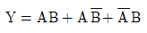
를 최소화 하면?- A+B
- AB
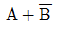
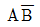
(정답률: 49%)
18. 고주파 트랜지스터에서 α 차단주파수 fα 와 β 차단주파수 fβ 의 관계식 중 옳은 것은? (단, C-B의 저주파 단락 전류 증폭률은 αo이다.)
- fα=(1-αo)fβ
- fα=(1+αo)fβ
- fβ=(1-αo)fα
- fβ=(1+αo)fα
(정답률: 43%)
19. 소스와 접지 사이의 용량을 무시할 수 있는 낮은 주파수 범위에서 그림과 같은 회로의 출력 저항은? (단,
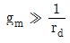
이다.)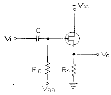
- Ro = Rg
- Ro=1/gm
- Ro=gm/1+μ
- Ro=μ/1+μ
(정답률: 40%)
20. 도면과 같은 차동증폭기에서 출력 전압(Vo)은?
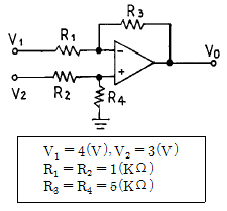
- -1[V]
- -5[V]
- -7[V]
- -12[V]
(정답률: 67%)
2과목: 전기자기학 및 회로이론
21. 역자성체 내에서 비투자율 μs는?
- μs≫1
- μs＞1
- μs＜1
- μs=1
(정답률: 40%)
22. 이상적인 직류 전압원에 대한 설명 중 옳은 것은?
- 이 소자는 선형 V-i 특성을 갖는 시변 소자이다.
- 이 소자는 비선형 V-i 특성을 갖는 시변 소자이다.
- 이 소자는 선형 V-i 특성을 갖는 시불변 소자이다.
- 이 소자는 비선형 V-i 특성을 갖는 시불변 소자이다.
(정답률: 63%)
23. 그림과 같이 무한 도체판으로부터 a[m] 떨어진 점에 +Q[C]의 점전하가 있을 때 2. 3. a[m]인 P점의 전계의 세기는 몇 V/m 인가?
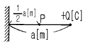
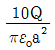
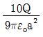
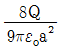
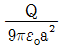
(정답률: 28%)
24. 그림과 같은 이상 변압기(ideal transformer) M의 값은 몇 [H]인가? (단, L1=2[H], L2=8[H]이다.)
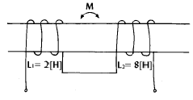
- 2
- 4
- 8
- 16
(정답률: 82%)
25. 유전속의 분포가 그림과 같을 때 ε1과 ε2의 관계는?
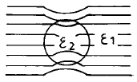
- ε1 = ε2
- ε1 ＜ ε2
- ε1 ＞ ε2
- ε1 =ε2 = 0
(정답률: 76%)
26. 자기 인덕턴스 L1, L2 가 각각 4[mH], 9[mH]인 두 코일이 이상결합(理想結合)되었다면 상호 인덕턴스 M은 몇 [mH]가 되는가?
- 6
- 6.5
- 9
- 36
(정답률: 83%)
27. 그림과 같은 회로로 입력 파형을 미분하기 위한 입력파형의 주기 T와 회로의 시정수 RC 사이의 조건은?
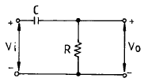
- T≪ RC
- T ≫RC
- T = RC
- T ≤ RC
(정답률: 87%)
28. 10[Ω]의 저항과 10[Ω ]의 리액턴스가 병렬로 연결되어 있을 때 역률은?
- 1
- 1/√2
- 1/√3
- 0
(정답률: 40%)
29. 전극 간격 d[m], 면적 S[m2], 유전률 ε[F/m]이고 정전용량이 c[F]인 평행판콘덴서에 e = Em sinωt[V]의 전압을 가할 때의 변위전류는?
- ωc Em cosωt
- ωc Em sinωt
- 1/ωcEm cosωt
- 1/ωcEm sinωt
(정답률: 62%)
30. 저항과 캐패시던스 직렬회로의 시정수는?
- R/C
- C/R
- RC
- /RC
(정답률: 96%)
31. 진공 중에 무한장 직선전하가 단위길이당 λ[C/m]가 분포되어 있을 때 전하의 중심축에서 r[m] 떨어진 점의 전계의 크기는?
- 거리의 제곱에 비례한다.
- 거리의 제곱에 반비례한다.
- 거리에 비례한다.
- 거리에 반비례한다.
(정답률: 47%)
32. 전류에 의한 자계의 발생 방향을 결정하는 법칙은?
- 비오사바르의 법칙
- 쿨롱의 법칙
- 페러데이의 법칙
- 암페어의 오른손 법칙
(정답률: 69%)
33. 교류전압 100[V], 전류 20[A]로서 1.6[kW]의 전력을 소비하는 회로의 리액턴스는 몇 [Ω]인가?
- 3
- 4
- 5
- 10
(정답률: 25%)
34. 유전율 ε[F/m], 고유저항 ρ[Ω·m]의 유전체를 삽입한 정전용량 C[F]인 콘덴서에 전압 V[V]를 걸었을 때의 그 중에 발생하는 열량은 몇 cal 인가?
- CV2/4.2ρɛ
- CV/4.2ρɛ
- CV2/8.4ρɛ
- ɛV/4.2ρC
(정답률: 56%)
35. sint의 Laplace 변환은?
- 1/S+1
- S/S2+1
- 1/S2+1
- S2/S2+1
(정답률: 76%)
36. 하이브리드 G 파라미터와 임피던스 및 어드미턴스 파라미터와의 관계로서 옳은 것은?
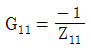
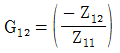
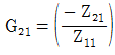
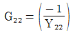
(정답률: 58%)
37. 비유전률이 9 인 유리(비자성체)에서의 고유 임피던스는 약 몇 Ω 인가?
- 42
- 84
- 126
- 377
(정답률: 50%)
38. 다음은 단위 임펄스 함수(unit impulse function)δ (t)에 관련된 사항들이다. 옳지 않은 것은?
- 폭은 거의 0이고, 높이는 거의 무한대가 되며 면적은 1이 되는 펄스이다.
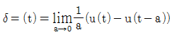
- 단위 램프 함수(unit ramp function)을 미분한 것이다.
- 임의 회로망의 입력 전압으로 δ (t)를 가하면 출력 전압은 전압비 전달함수와 같게 된다.
(정답률: 31%)
39. 전기력선의 성질 중 틀린 것은?
- 진공 중에서 전기력선은 단위전하에서 1/εo개가 출입한다.
- 전기력선은 도체 내부에서 연속적이다.
- 전기력선 밀도는 전계의 세기와 같다.
- 전기력선은 등전위면에 수직이다.
(정답률: 52%)
40. 1차, 2차 코일의 자기인덕턴스가 각각 49mH, 100mH 결합계수 0.9일 때, 이 두 코일을 자속이 합하여지도록 같은 방향으로 직렬로 접속하면 합성 인덕턴스는 몇 mH 인가?
- 212
- 219
- 275
- 289
(정답률: 52%)
3과목: 전자계산기일반
41. 마이크로프로세서가 기억장치 및 입∙출력기기와 연결을 위해 가져야 할 것이 아닌 것은?
- 데이터 버스
- 어드레스 버스
- 결합 버스
- 제어선
(정답률: 56%)
42. 어떤 컴퓨터의 명령어에서 OP 코드가 8비트라면 명령어의 최대 가지 수는 얼마나 되겠는가?
- 257
- 256
- 255
- 254
(정답률: 86%)
43. 컴퓨터 시스템은 보통 1-Address Machine, 2-Address Machine, 3-Address Machine으로 나눈다. 이 때 구분의 기준이 되는 것은?
- Register의 수
- Operation의 수
- 기억장치의 크기
- Operand 부분인 주소 부분
(정답률: 17%)
44. DMA 제어기의 구성과 관계없는 것은?
- daisy chain
- address register
- word count register
- control register
(정답률: 43%)
45. 10진수 1234를 BCD 코드로 표현한 것은?
- 0001001000110100
- 1110110111001011
- 1001101001000000
- 0110010110100001
(정답률: 75%)
46. 다음에 읽어야 할 명령이 들어있는 어드레스를 기억하는 레지스터는?
- PC
- IR
- AC
- MAR
(정답률: 70%)
47. 비가중치(non-weighted) 코드인 것은?
- 8421 코드
- Biquinary 코드
- 2-out-of-5 코드
- 2421 코드
(정답률: 38%)
48. 프로세서 제어를 통하지 않고 기억장치와 입∙출력장치의 사이에서 직접 데이터를 전송하는 입∙출력 제어 방식은?
- 프로그램 제어
- DMA 제어
- 인터럽트 제어
- 무조건 전송 방식
(정답률: 71%)
49. 서브루틴을 호출할 때 복귀 주소(Return address)를 기억하는데 주로 사용되는 것은?
- 스택
- 상태 레지스터
- 프로그램 카운터
- 프로그램 상태 레지스터
(정답률: 60%)
50. 다음 중 단항 연산자는?
- MOVE
- OR
- AND
- XOR
(정답률: 69%)
51. 운영체제에 대한 설명으로 가장 옳은 것은?
- 운영체제는 사용자 스스로 제공한다.
- 프로그래머가 작성한 언어를 기계어로 번역하는 프로그램이다.
- 어떤 용도를 위해 범용 프로그램과 사용자가 직접 작성한 프로그램을 말한다.
- 컴퓨터 시스템의 효율성을 높이고, 사용자에게 편리를 제공하기 위한 소프트웨어 체제를 말한다.
(정답률: 86%)
52. 입력 장치에 해당하지 않는 것은?
- Magnetic Disk
- Mouse
- Lightpen
- Plotter
(정답률: 65%)
53. 가상 기억(Virtual Memory) 장치를 사용함으로써 얻을 수 있는 가장 주된 효과는?
- 오버레이(overlay) 문제점을 해결
- 프로그램의 고속 compile이 가능
- 데이터의 고속 처리가 가능
- 메모리 용량의 한계를 극복
(정답률: 68%)
54. 2개 이상의 file을 하나의 file 로 만드는 순서도 기호 (▽)의 명칭은?
- SORT
- merge
- collate
- select
(정답률: 58%)
55. 원시 프로그램을 기계어로 번역한 것을 무엇이라 하는가?
- 연결 프로그램(Linkage program)
- 목적 프로그램(Object program)
- 사용자 프로그램(User program)
- 원시 프로그램(Source program)
(정답률: 78%)
56. 주기억장치에서 기억된 명령을 해독하기 위하여 꺼내는 작업을 무엇이라고 하는가?
- fetch
- timing
- polling
- interrupt
(정답률: 78%)
57. 2개의 자료 11101101과 01101111이 ALU에 의해서 AND 연산이 이루어졌을 때 그 결과는?
- 11101111
- 01101101
- 10000010
- 01111101
(정답률: 65%)
58. 어떠한 명령(instruction)이 수행되기 위해서 가장 먼저 이루어져야 하는 마이크로 오퍼레이션은?
- PC → MAR
- PC+1 → PC
- PC → MBR
- MBR → IR
(정답률: 85%)
59. 캐시(cache) 메모리에서 정보의 주소를 찾는 방법을 매핑(mapping)이라 할 때 가장 신속한 것은?
- 허시 매핑 방식(hash mapping)
- 직접 매핑 방식(direct mapping)
- 연관 기억 장치(associative memory)
- 프로그램 매핑 방식(program mapping)
(정답률: 53%)
60. 정기적으로 refresh 신호를 가하면서 기억 내용을 보존해야 하는 반도체 기억소자는?
- EPROM
- PROM
- DRAM
- SRAM
(정답률: 82%)
4과목: 전자계측
61. VU계(meter)의 단위는?
- VU
- dB
- V-m
- dBm
(정답률: 66%)
62. Q-미터로 측정할 수 없는 것은?
- 절연 저항
- 용량
- 주파수 저항
- 코일의 Q
(정답률: 42%)
63. 가동철편형 계기에서 주파수의 영향을 보상하기 위하여 직렬 저항에 병렬로 삽입한 콘덴서의 크기는?
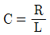
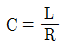
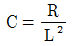
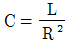
(정답률: 55%)
64. 그림의 회로에서 a, b 양단의 전압을 측정하니 V 볼트였다. 부하저항 R 값은? (단, E:전지전압 r:전지내부저항)
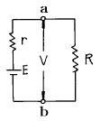
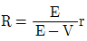
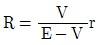
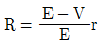
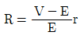
(정답률: 50%)
65. 고주파 전압 측정에 이용되는 것은?
- 레벨미터
- 볼로미터
- Q미터
- 전자 전압계
(정답률: 61%)
66. 오실로스코프로 전압을 측정한 결과 진폭이 5cm[p-p]의 크기로 나타났다. 이 전압의 실효값은 약 얼마인가? (단, 오실로스코프의 편향감도는 1[mm/V] 이다.)
- 17.7 [V]
- 19.5 [V]
- 25 [V]
- 50 [V]
(정답률: 61%)
67. 계수형 주파수계에서 Reset 회로의 역할은?
- Gate 시간을 조정한다.
- 입력신호 레벨을 조정한다.
- 각부의 오동작을 제거한다.
- 계수하기 전에 계수부를 0으로 복귀시킨다.
(정답률: 91%)
68. 헤테로다인 주파수계에서 Single beat 법보다 Double beat 법이 좋은 이유는?
- 구조가 간단하다.
- 취급이 용이하다.
- 오차가 적다.
- 측정 범위가 넓다.
(정답률: 71%)
69. 전자회로의 주파수 특징을 시험하는데 관계없는 것은?
- 오실로스코프
- 스위프 신호 발생기
- 마커 신호 발생기
- 맥스웰 브리지
(정답률: 66%)
70. 오실로스코프로 측정 불가능한 것은?
- 전압
- 변조도
- 주파수
- 코일의 Q
(정답률: 76%)
71. 그림과 같은 브리지의 평형 조건은?
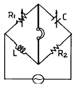
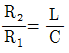
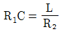
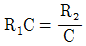
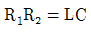
(정답률: 68%)
72. 윈 브리지(wien bridge)로 측정할 수 있는 것은?
- 역률
- 정전 용량
- 접지 저항
- 코일의 자기인덕턴스
(정답률: 70%)
73. 감도가 높고, 정밀한 측정을 요구하는 경우 사용하는 측정법 중 가장 적합한 것은?
- 영위법
- 편위법
- 반경법
- 직편법
(정답률: 92%)
74. 셰링 브리지(Schering bridge)로 측정할 수 있는 것은?
- 유전체 손실각
- 철심의 와전류
- 동선의 저항
- 인덕턱스
(정답률: 79%)
75. 지시 계기에서 제어 장치에 해당되는 것은?
- 스프링 제어
- 와류 제어
- 액체 제어
- 공기 제어
(정답률: 52%)
76. 참값을 T, 측정값을 M 이라고 할 때 보정(α)을 나타내는 식은?
- α = M-T
- α = T-M
- α = T-M/M
- α = T-M/T
(정답률: 71%)
77. 다음 저항 감쇠기 중 평형형은?
- L 형
- T 형
- H 형
- π 형
(정답률: 61%)
78. 0과 1의 숫자로 표시된 양을 전압이나 전류로 고치는 변환기는?(단, D=Digital, A=Analog)
- A-D 변환기
- D-A 변환기
- A-A 변환기
- D-D 변환기
(정답률: 54%)
79. 고주파 및 파형의 영향을 받지 않는 계기는?
- 가동철편형
- 전류력계형
- 유도형
- 열전대형
(정답률: 67%)
80. 전류계가 50[A]를 지시하고 있을 때의 보정률이 +2[%]이면 정확한 값은?
- 49 [A]
- 50 [A]
- 51 [A]
- 52 [A]
(정답률: 49%)